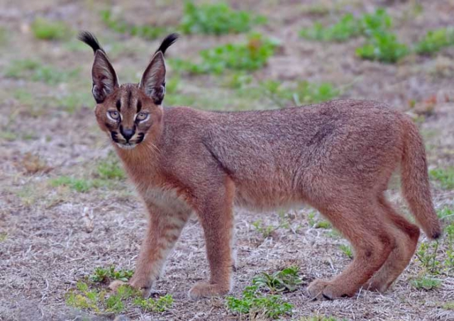
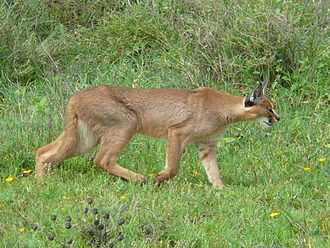

Каракал
Каракал, или степная рысь 1 (лат. Caracal caracal от тюркского «кара-кулак» — чёрное ухо) — хищное млекопитающее семейства кошачьих. Долгое время каракала относили к рысям, на которых он похож внешне, однако ряд генетических особенностей выделил его в отдельный род. Несмотря на это, каракал всё же немного ближе стоит к рысям, чем другие кошки, при этом будучи гораздо ближе к пуме по морфологическим признакам. Близок каракал и к африканскому сервалу, с которым хорошо скрещивается в неволе.
Внешний вид
Внешне напоминает рысь, но меньше размерами, стройнее и с однотонной окраской. Длина тела 65—82 см, хвоста — 25—30 см, высота в холке около 45 см; масса — 11—19 кг. Уши с кисточками (до 5 см) на концах. На лапах развита щётка из жёстких волос, облегчающая передвижение по песку.
Мех короткий и густой. Окраской напоминает северо-американскую пуму: песчаный или красновато-коричневый верх, беловатый низ; по бокам морды чёрные отметины. Кисточки и наружная сторона ушей — чёрные. Очень редко встречаются чёрные каракалы-меланисты.
Название
Название «каракал» происходит от тур. karakulak «чёрное ухо», так как задняя сторона ушей у этих кошек чёрная. В Северной Африке каракала также называют берберийской рысью.
Распространение и подвиды

Водится в саваннах, опустыненных степях, пустынях и предгорьях Африки, в пустынях Аравийского полуострова, Малой и Средней Азии, на Ближнем Востоке. На территории СНГ малочислен: встречается в пустынях Южной Туркмении, по побережью Каспийского моря доходит до полуострова Мангышлак, на востоке иногда появляется в Киргизии и Бухарской области Узбекистана. В России единичные особи каракала можно встретить в предгорьях и пустынях Дагестана, однако общая численность его не превышает 100 особей.
Подвиды каракала и их распространение:
- Caracal caracal caracal — в Судане и Южной Африке,
- Caracal caracal algira — в Северной Африке,
- Caracal caracal damarensis — в Намибии,
- Caracal caracal limpopoensis — в Ботсване,
- Caracal caracal lucani — в Габоне,
- Caracal caracal michaelis — Туркменский каракал 2, в Туркмении (вымирающий подвид, не более 300 особей),
- Caracal caracal nubica — в Судане и Эфиопии,
- Caracal caracal poecilictis — в Нигерии,
- Caracal caracal schmitzi — Индийский каракал 2, от Аравии до Передней Индии.
Образ жизни и питание
Деятелен каракал главным образом ночью, но зимой и весной появляется и днём. Убежищами ему служат расщелины скал и норы дикобразов и лисиц; иногда они используются несколько лет подряд. Самцы занимают обширные территории, а территории самок, более скромные, располагаются на периферии.

Хотя у каракала длинные ноги, долго бежать, как и все кошачьи, он не может, поэтому охотится, скрадывая жертву и настигая её большими (до 4,5 м в длину) прыжками. Обладая необычайной скоростью реакции и очень острыми втяжными когтями, каракал способен выхватить несколько птиц из взлетающей стаи. Однако главной пищей ему служат грызуны (песчанки, тушканчики, суслики), зайцы-толаи, отчасти мелкие антилопы, в Туркменистане — джейраны. Иногда добывает ежей, дикобразов, рептилий, насекомых, небольших хищных зверей, вроде лисицы и мангуста, молодых страусов. Может похищать домашнюю птицу, нападать на ягнят и коз. Каракал способен долгое время обходиться без воды, получая жидкость из съеденной добычи.
Подобно леопарду, каракал затаскивает убитую дичь на деревья, чтобы спрятать её от других хищников.
Размножение
Размножение происходит круглый год, самка может иметь до трёх партнеров. После беременности в 78—81 дней рождается 1—6 детёнышей. До достижения ими месячного возраста самка раз в день переносит их из одного логова в другое. В 6 месяцев молодые каракалы покидают мать и обосновываются в своих владениях. Половозрелыми становятся в 16—18 месяцев. 
Каракал в истории, приручение
Каракалы легко приручаются. В Азии (Индия, Персия) с ручными каракалами охотились на зайцев, фазанов, павлинов и мелких антилоп. В древности такая охота была очень популярна на Востоке; в Индии каракала называют «маленьким гепардом» или «гепардом для бедных», поскольку в отличие от гепардов каракала отлавливали и держали небогатые люди. Теперь такая охота — редкость.
Статус популяции и охрана
В Африке, особенно Южной, каракал достаточно обычен и считается вредителем. Существует особая культура охоты на каракала: его подманивают приборами, имитирующими крик раненого зайца или мыши, и ночью стреляют из-под фар. Кроме того, в Южной Африке каракалов используют, чтобы отгонять птиц (в основном, цесарок) со взлётно-посадочных полос военных аэродромов.
Азиатские подвиды каракала гораздо более редки и занесены в Приложение II CITES.
| Исчезнувшие | Угрожаемые | С мин. риском | ||||
|---|---|---|---|---|---|---|
| EX | EW | CR | EN | VU | NT | LC |
Примечания
- Соколов В. Е. Пятиязычный словарь названий животных. Млекопитающие. Латинский, русский, английский, немецкий, французский. / под общей редакцией акад. В. Е. Соколова. — М.: Рус. яз., 1984. — С. 107. — 10 000 экз.
- Соколов В. Е. Редкие и исчезающие животные. Млекопитающие. — М.: Высшая школа, 1986. — С. 317. — 100 000 экз.